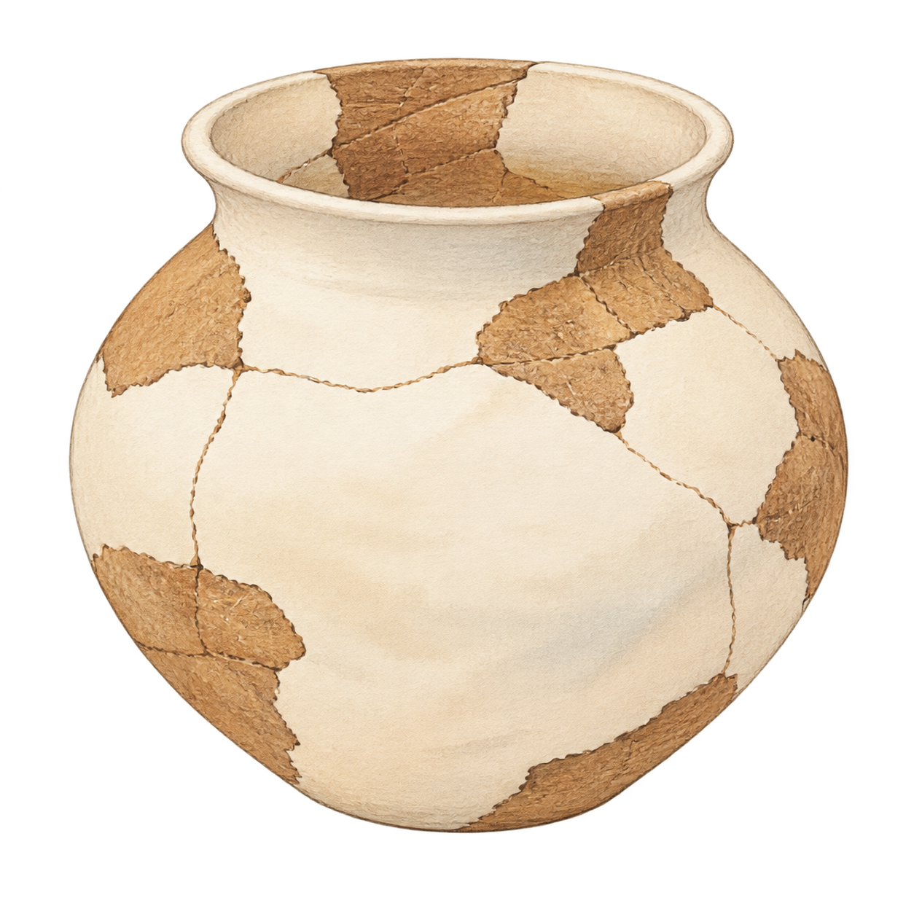
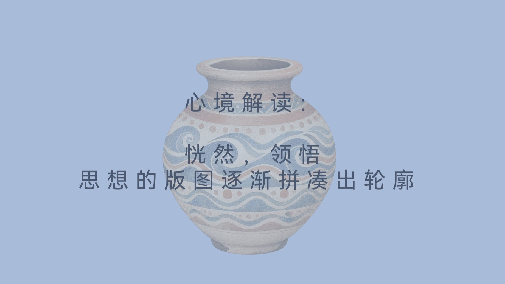
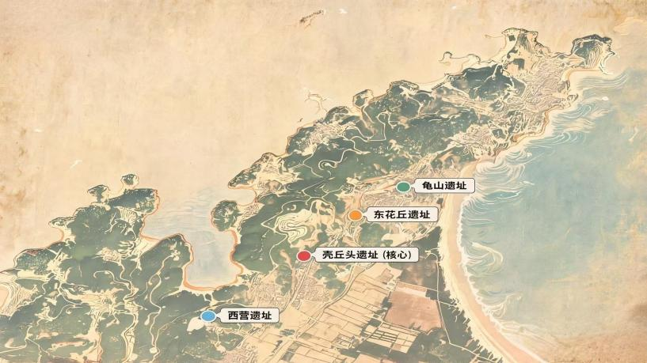
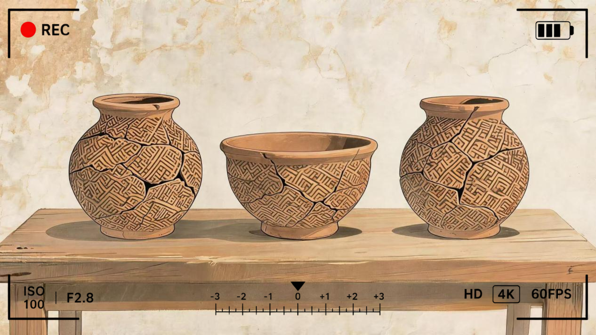

解锁纪念物：一只陶罐冰箱贴


平潭南岛语族遗址群：
西营遗址：目前平潭岛发现的最早新石器时代遗存，年代距今约7300至6500年，发掘出土了福建目前所知最早的干栏式房屋建筑遗迹，聚落规模较小、生活功能区相对集中紧凑。
壳丘头遗址：年代距今约6500至5000年，聚落已发展为中型部落，居住区、餐食加工区、手工业区、垃圾倾倒区等功能分区清晰，是我国沿海地区年代最早、保存最完整的史前聚落形态之一。
东花丘遗址：遗址群中新石器时代末期的代表，年代距今约4000至3500年，被认为是平潭本土文化与闽江下游文化交流融合的产物。
龟山遗址：年代距今约4000至3200年，延续了东花丘遗址的文化特征，陶器以夹砂陶为主，器形以圜底器、浅圈足器为主。

